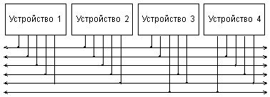
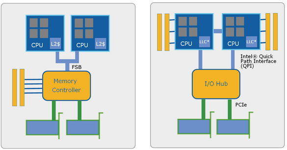
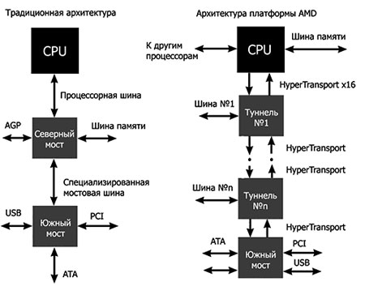
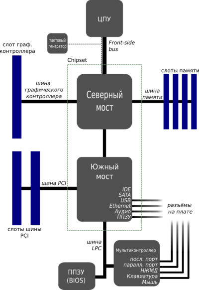
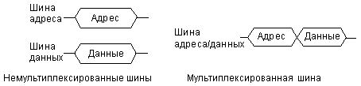
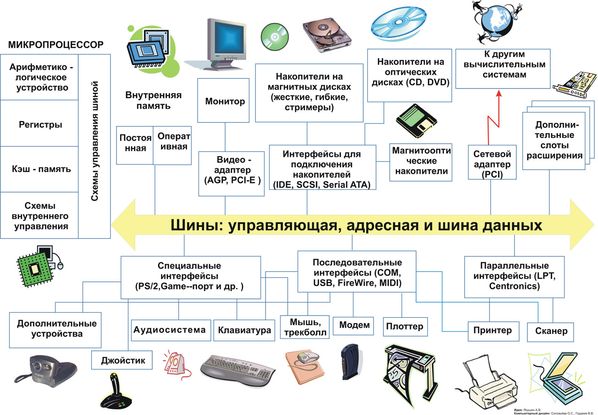
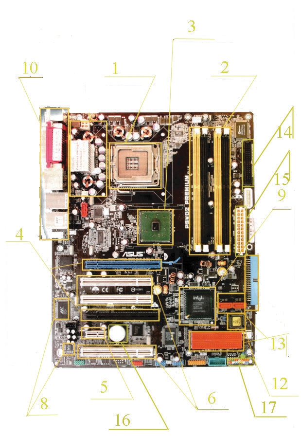

ЛАБОРАТОРНАЯ РАБОТА № 1
Изучение компонентов материнской платы
Цель работы — рассмотреть организацию ЭВМ на основе шинной архитектуры. Изучить компоненты материнской платы. Изучить основные узлы и устройства ПК. Выяснить их назначение и взаимосвязь.
Теоретическая часть
Структура связей компонентов в микропроцессорных системах
Чаще всего в микропроцессорных системах применяется так называемая шинная структура связей между отдельными устройствами, входящими в систему. Суть шинной структуры связей сводится к следующему.
Рис. 1.1. Классическая структура связей.
При классической структуре связей все сигналы и коды между устройствами передаются по отдельным линиям связи. При этом в системе получается очень много линий связи и разных протоколов обмена информацией.
Если рассматривать шинную структуру связей, то в ней все сигналы между устройствами передаются по одним и тем же линиям связи, но в разное время (так называемая мультиплексированная передача). Причем передача по всем линиям связи может осуществляться в обоих направлениях (двунаправленная передача). В результате количество линий связи существенно сокращается, а правила обмена (протоколы) упрощаются. Группа линий связи, по которым передаются сигналы или коды как раз и называется шиной (англ. bus).
Понятно, что при шинной структуре связей легко осуществляется пересылка всех информационных потоков в нужном направлении, например, их можно пропустить через один процессор, что очень важно для микропроцессорной системы. Однако при шинной структуре связей вся информация передается по линиям связи последовательно во времени, по очереди, что снижает быстродействие системы по сравнению с классической структурой связей.

Рис. 1.2. Шинная структура связей.
Однако на данный момент основные производители делают новые шаги и переходят на более современные структуры связей. Основной прорыв совершила корпорация Intel, представив общественности Quick Path Interface (QPI).

Рис. 1.3. Quick Path Interface
Данная схема, как мы видим из рисунка была разработана с учётом как постоянного увеличения количества ядер ЦП, так и увеличения количества самих ЦП. Как видно из рисунка такая система предполагает непосредственное обращение процессора к оперативной памяти, что подразумевает наличие контроллеров памяти на самих процессорах. А это уже является модифицированной классической структурой связей. Но, как говорится, всё новое — это хорошо забытое старое, и, как результат, скорость работы данных систем в разы превышает скорость работы систем на основе шинной структуры.
Компания AMD также не стоит на месте и предлагает технология HyperTransport, которая представляет собой высокопроизводительный интер-фейс типа “точка-точка” предназначенный для связи интегральных микросхем. Другим ключевым новововедением стандарта HyperTransport стала появившая-ся совместимость с интерфейсом PCI-Express, в добавок к уже существующей поддержке PCI и PCI-X. Стоит отметить, что HyperTransport 3.0 способна обес-печить пропускную способность до 20,8 Гб/с в каждом из направлений, что является крайне высоким показателем.

Рис. 1.4. Hyper Transport
Сейчас многие производители увлечены данными концепциями и без со-мнения за ними будет будущее, однако на рынках ещё достаточно материнских плат на шинной структуре и в подавляющем большинстве в тех компьютерах, которыми мы пользуемся. А потому в дальнейшем в лабораторной работе мы будем говорить о шинно-ориентированных материнских платах.
Матери́нская пла́та (англ. motherboard, MB, также используется название англ. mainboard — главная плата; сленг. мама, мать, материнка) — это сложная многослойная печатная плата, на которой устанавливаются основные компоненты персонального компьютера (центральный процессор, контроллер ОЗУ и собственно ОЗУ, загрузочное ПЗУ, контроллеры базовых интерфейсов ввода-вывода). Как правило, материнская плата содержит разъёмы (слоты) для подключения дополнительных контроллеров, для подключения которых обычно используются шины USB, PCI и PCI-Express. В системную магистраль (системную шину) микропроцессорной системы входит три основные информационные шины: адреса, данных и управления.
Основные компоненты материнской платы:
1. Центральный процессор.
2. Набор системной логики (англ. chipset) — набор микросхем, обеспечивающих подключение ЦПУ к ОЗУ и контроллерам периферийных устройств. Как правило, современные наборы системной логики строятся на базе двух интегральных микросхемах (ИМ): «северного» и «южного мостов»:
- Северный мост (англ. Northbridge), MCH (Memory controller hub), системный контроллер — обеспечивает подключение ЦПУ к узлам, использующим высокопроизводительные шины: ОЗУ, графический контроллер. В качестве шины для подключения графического контроллера на современных материнских платах используется PCI Express. Ранее использовались общие шины (ISA, VLB, PCI) и шина AGP.
- Южный мост (англ. Southbridge), ICH (I/O controller hub), периферийный контроллер — содержит контроллеры периферийных устройств (жёсткого диска, Ethernet, аудио), контроллеры шин для подключения периферийных устройств (шины PCI, PCI-Express и USB), а также контроллеры шин, к которым подключаются устройства, не требующие высокой пропускной способности (LPC — используется для подключения загрузочного ПЗУ; также шина LPC используется для подключения мультиконтроллера (англ. Super I/O) — микросхемы, обеспечивающей поддержку «устаревших» низкопроизводительных интерфейсов передачи данных: последовательного и параллельного интерфейсов, контроллера клавиатуры и мыши).
3. ОЗУ.
4. Загрузочное ПЗУ — хранит ПО, которое исполняется сразу после включения питания. Как правило, загрузочное ПЗУ содержит BIOS, однако может содержать и ПО, работающие в рамках EFI.
Как правило, северный и южный мосты реализуются в виде отдельных интегральных микросхем, однако существуют и одночиповые решения. Именно набор системной логики определяет все ключевые особенности материнской платы и то, какие устройства могут подключаться к ней.
В виде схемы всё выглядит следующим образом:

Рис. 1.5. Компоненты материнской платы
В системную магистраль (системную шину) микропроцессорной системы входит три основные информационные шины: адреса, данных и управления.
Это основная шина, ради которой и создается вся система. Количество ее разрядов (линий связи) определяет скорость и эффективность информационного обмена, а также максимально возможное количество команд. Шина данных всегда двунаправленная, так как предполагает передачу информации в обоих направлениях. Наиболее часто встречающийся тип выходного каскада для линий этой шины — выход с тремя состояниями.
Обычно шина данных имеет 8, 16, 32 или 64 разряда. Понятно, что за один цикл обмена по 64-разрядной шине может передаваться 8 байт информации, а по 8-разрядной — только один байт. Разрядность шины данных определяет и разрядность всей магистрали. Например, когда говорят о 32-разрядной системной магистрали, подразумевается, что она имеет 32-разрядную шину данных.
Шина адреса
Вторая по важности шина, которая определяет максимально возможную сложность микропроцессорной системы, то есть допустимый объем памяти и, следовательно, максимально возможный размер программы и максимально возможный объем запоминаемых данных. Количество адресов, обеспечиваемых шиной адреса, определяется как $ 2^N$, где N — количество разрядов. Например, 16-разрядная шина адреса обеспечивает 65536 адресов. Разрядность шины адреса обычно кратна 4 и может достигать 32 и даже 64. Шина адреса может быть однонаправленной (когда магистралью всегда управляет только процессор) или двунаправленной (когда процессор может временно передавать управление магистралью другому устройству, например контроллеру ПДП).
Как в шине данных, так и в шине адреса может использоваться положительная логика или отрицательная логика. При положительной логике высокий уровень напряжения соответствует логической единице на соответствующей линии связи, низкий — логическому нулю. При отрицательной логике — наоборот.
Это вспомогательная шина, управляющие сигналы на которой определяют тип текущего цикла и фиксируют моменты времени, соответствующие разным частям или стадиям цикла. Кроме того, управляющие сигналы обеспечивают согласование работы процессора (или другого хозяина магистрали, задатчика, master) с работой памяти или устройства ввода/вывода (устройства-исполнителя, slave). Управляющие сигналы также обслуживают запрос и предоставление прерываний, запрос и предоставление прямого доступа.
Сигналы шины управления могут передаваться как в положительной логике (реже), так и в отрицательной логике (чаще). Линии шины управления могут быть как однонаправленными, так и двунаправленными. Типы выходных каскадов могут быть самыми разными: с двумя состояниями (для однонаправленных линий), с тремя состояниями (для двунаправленных линий), с открытым коллектором (для двунаправленных и мультиплексированных линий).
Для снижения общего количества линий связи магистрали часто применяется мультиплексирование шин адреса и данных. То есть одни и те же линии связи используются в разные моменты времени для передачи как адреса, так и данных (в начале цикла — адрес, в конце цикла — данные). Для фиксации этих моментов (стробирования) служат специальные сигналы на шине управления. Понятно, что мультиплексированная шина адреса/данных обеспечивает меньшую скорость обмена, требует более длительного цикла обмена (Рис. 3.4.). По типу шины адреса и шины данных все магистрали также делятся на мультиплексированные и немультиплексированные.

Рис. 1.6. Мультиплексирование шин адреса и данных
Рассматривая IBM-совместимую компьютерную архитектуру можно разделить все устройства на системные (процессор, оперативная память и т.д.) и внешние, которые подразделяются на запоминающие (жесткий диск, CR-ROM и т.д.) и устройства ввода/вывода (клавиатура, принтер и т.д.). Каждое из устройств должно подсоединяться к системной шине. Существуют следующие основные способы подключения устройств к системной шине:
Используется для системных устройств. Обычно встроен в материнскую плату. Устройство подключенное к разъему с точки зрения архитектуры является жизненно необходимым для работы ПК. Системная шина также имеет разъемы на материнской плате для подключения контроллеров. Наиболее распространненными являются PCI, AGP и PCI-Express. Используя разъем устройство подключается непосредственно к системной шине
Представляет собой аналог разъема с тем отличием, что порт предназначен для подключения внешних устройств не соединяющихся напрямую с материнской платой. Работу устройств подключенных посредством порта обычно контролирует операционнная система. Различают:
· параллельные порты, в которых данные передаются параллельными блоками. Последовательные порты: COM.
· последовательные порты, в которых данные передаются последовательно друг за другом. Параллельные порты: LPT.
· последовательно-параллельные порты, в которых данные передаются последователь-но, но параллельными блоками. Последовательно-параллельные порты: USB.
Синонимом порта является интерфейс.
Обеспечивает сопряжение внешнего устройства и системной платы. Контроллеры бывают либо интегрированными (встроенными) в материнскую плату(контроллер клавиатуры, жесткого диска и т.д.), либо выполняются в виде отдельной платы, вставляющейся в разъем на МП, в этом случае контроллер называют адаптером (видеоадаптер, сетевой адаптер и т.д.).
Общая организация узлов и устройств ЭВМ:

Рис. 1.7. Архитектура ЭВМ.
Практическая часть
Внимательно рассмотреть представленную материнскую плату на рисунке ниже. На ее примере выделить основные компоненты, а также их назначение материнской платы, предоставленной преподавателем.
Нумерация компонентов:
1.Центральный процессор
2.Оперативная память
3.Чипсет
4.Видеокарта
5.Разъёмы для подключения специализированных устройств PCI
6.Шина PCI
7.Аудиочипсет
8.Джампер
9.Чипсет
10.Внешние разъёмы
11.Системные преобразователи напряжения (катушки)
12.Микросхема BIOS
13.Разъемы для подключения жестких дисков
14.Для подключения floppy-дисковода
15.Разъём питания
16.Батарейка для BIOS
17.Индикаторы

Рис. 1.8. Пример материнской платы.
Контрольные вопросы
1. Какие шины входят в состав системной магистрали?
2. Что такое «порт»? Каковы наиболее распространенные типы портов?
3. Какие компоненты содержит материнская плата? В чем их назначение?